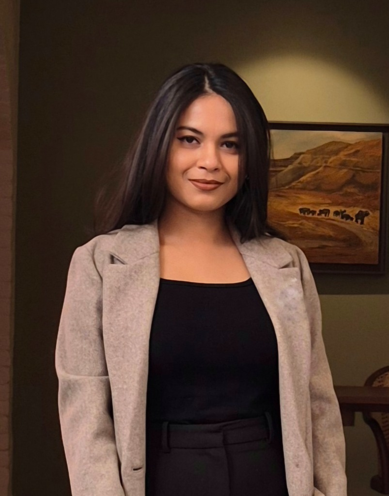

Crafting Stories for
Digital
Growth.
I manage and create social media content for brands and personal projects, working on reels, short videos, captions, and blog posts. Alongside content creation, I’ve supported influencer outreach and campaigns, focusing on clear storytelling and steady audience growth.

Expertise & Skills
Content Creation
Social Media Management
Video Production
Influencer Outreach
Brand Development
Copywriting & Captions
SEO Blog Writing
Campaign Strategy
Digital Marketing
Visual Storytelling
Experience
Social Media Manager & Content Creator
Various Brands & Personal Projects
Successfully managed and grew social media presence for brands like Arham Organic, The Pursuit
of Makeup, and Darkeum. Delivered high-performing short-form video content (Reels, YouTube
Shorts) and long-form LinkedIn posts that drove audience engagement and brand trust.
Influencer Campaign Lead
PR & Outreach Projects
Led influencer outreach and campaign management, focusing on PR-led growth. Orchestrated reel
collaborations and social media campaigns that expanded brand reach through strategic
partnerships.
Brand Developer & Marketing
Darkeum (Candle Brand)
End-to-end development of a candle brand, including branding, visual identity, and social media
marketing strategy.
Content Writer & Blogger
Arham Life
Authored in-depth product blog content aimed at building brand trust and providing value to
customers through informative and SEO-friendly articles.